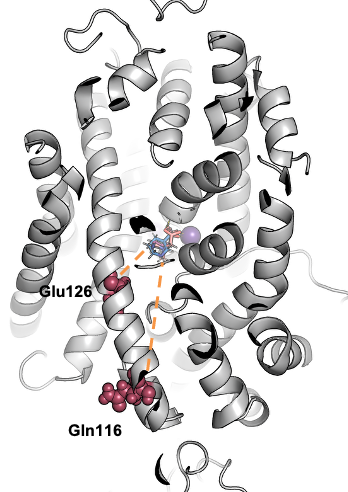
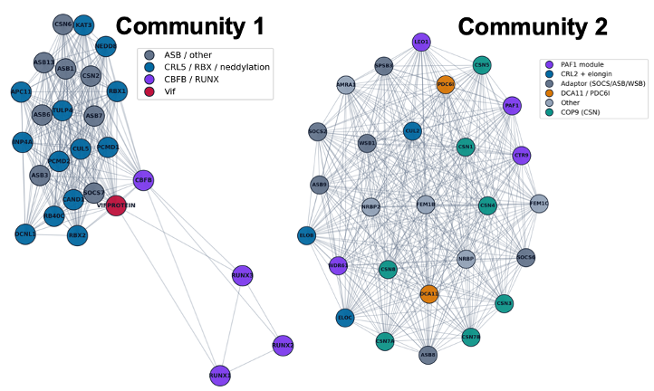

01
Biomolecular Structure & Dynamics
Molecular modeling, conformational dynamics, simulations, and analysis of proteins, complexes, and membrane-associated systems.
COMPUTATIONAL · INTEGRATIVE · DATA-DRIVEN
We develop and apply computational, integrative, and data-driven approaches to understand biomolecular structure, dynamics, interactions, and function.

MOLECULES→ ASSEMBLIES→
ASSEMBLIES→
NETWORKSRESEARCH
Molecular modeling, conformational dynamics, simulations, and analysis of proteins, complexes, and membrane-associated systems.
Integrating structural, proteomic, and systems-level information to model macromolecular assemblies across biological scales.

Structure-based molecular discovery, ligand recognition, virtual screening, and AI/ML-enabled approaches to drug–target interactions.
OUR VISION
LBSD seeks mechanistic understanding across scales—from individual biomolecules and their dynamics to macromolecular assemblies and interaction networks—while developing computational approaches that connect structural biology with molecular discovery.
LABORATORY
Our work spans computational structural biology, molecular simulation, integrative modeling, Bayesian inference, structural bioinformatics, and molecular discovery.
About LBSD →OPPORTUNITIES
Interested students are encouraged to contact us.
Opportunities →